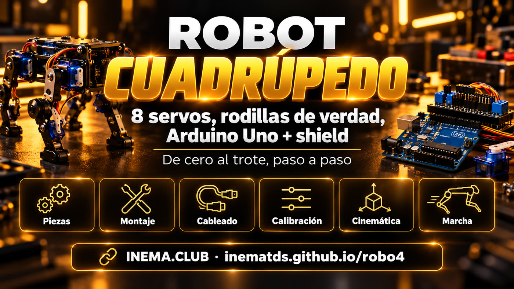

robo4 es un plan completo para construir en casa un pequeño robot de cuatro patas (de unos 20 cm) que camina. Cada pata tiene dos motores pequeños, llamados servos: uno en la cadera y otro en la rodilla. Un Arduino Uno controla todo con una placa shield encima, donde se conectan los 8 servos. Aquí tienes la lista de piezas, los diagramas de cableado, los pasos para armarlo y calibrarlo, y el código que ya compila. Es para quien quiere aprender robótica con sus propias manos. Necesitas una computadora, las piezas de la lista y una tarde para armarlo.
Qué es
Un cuadrúpedo sencillo que camina de verdad
Dos articulaciones por pata es lo mínimo para que el pie suba, avance y baje. El resto es calibración y ritmo.

🦿 Rodillas reales
Cadera y rodilla en cada pata (8 servos MG90S con engranajes metálicos). El pie describe un arco: sube, avanza y se apoya.
🔌 Sin protoboard
El Sensor Shield V5 tiene 3 pines por puerto: los servos se conectan directamente de D2 a D9. Los servos reciben energía de una fuente independiente.
🧮 Código listo
Cinemática inversa, trote, marcha lenta, giro y calibración guardada en la memoria. Controla el robot con letras desde el Monitor Serial.
Cómo funciona
De las piezas al trote
Siete etapas que se convierten en los 10 pasos de la guía: batería = paso 1, electrónica = 2, servos a 90° = 3, patas = 4 y 5, calibración = 6 a 8, marcha lenta = 9, trote = 10.
Comprar y cargar la batería→Electrónica en la mesa→Servos a 90°→Armar las patas→Calibrar→Marcha lenta→Trote
Dónde debe estar el pie
El código trabaja en milímetros: «pie 15 mm adelante y 85 mm debajo de la cadera». La cinemática inversa (ley de cosenos) convierte esto en dos ángulos.
Hacia dónde va el servo
90° en el servo = muslo vertical y rodilla en ángulo recto. Cadera: 90 + signo × ángulo + ajuste. Rodilla: 90 + signo × (ángulo − 90) + ajuste.
Cuándo sube cada pie
En la marcha lenta, sube un pie a la vez (tres quedan en el suelo) y el cuerpo se balancea para mantener el peso sobre ellos. En el trote, suben dos pies en diagonal. Todo se actualiza 50 veces por segundo.
Piezas y herramientas
Qué comprar
Los precios en reales son estimaciones de octubre de 2026. Total básico: R$ 450 a 850, sin impresora 3D ni accesorios opcionales.
Ilustración generada con IA: el kit completo antes del armado.
En el celular, desliza la tabla hacia un lado para ver todas las columnas.
Artículo
Cant.
Estimación
Por qué elegirlo
Arduino Uno R3 + cable USB
1
R$ 50–130
Cerebro del robot
Sensor Shield V5.0 para Uno
1
R$ 20–35
Conectores S/V/G para los servos y terminal de alimentación separado
Microservo MG90S
8 (+1 de repuesto)
R$ 18–30 cada uno
Los engranajes metálicos soportan el peso en la rodilla; el SG90 de plástico se desgasta
Batería LiPo 2S 7,4 V, 1000–2200 mAh, XT60
1
R$ 70–140
Alimenta los servos y el Arduino
UBEC / step-down 5–6 V, 5 A o más
1
R$ 20–45
Los 8 servos consumen de 4 a 6 A en el pico
Interruptor de encendido/apagado (≥ 5 A)
1
R$ 5–10
Cortar toda la alimentación de una vez
Alarma de voltaje para LiPo (zumbador)
1
R$ 8–15
Suena antes de que la batería baje demasiado
Conector macho P4 de 5,5 × 2,1 mm con cable
1
R$ 5–10
Lleva la batería al jack DC del Uno (el shield cubre el pin VIN)
Cable 18 AWG rojo y negro (~1 m)
1
R$ 8–15
Línea de alimentación: batería → interruptor → UBEC → terminal
Cargador balanceado 2S
1
R$ 60–150
Las baterías LiPo solo se cargan con balanceador
Chasis + 4 muslos + 4 espinillas
1 juego
R$ 10–40
Impresos en 3D o de acrílico/MDF de 3 mm
Patas de goma, tornillos M2/M3, separadores, bridas, velcro
kit
R$ 30–60
Sujeción y agarre
Opcionales: Bluetooth HC-05, ultrasonido HC-SR04, IMU MPU-6050
—
R$ 50–80
Control desde el celular, detección de obstáculos y equilibrio
Herramientas
Destornillador Phillips pequeño, alicate de corte, multímetro y cautín (solo para el XT60 y el interruptor).
Software
Arduino IDE o arduino-cli (herramienta de línea de comandos de Arduino). Los comandos de esta guía usan arduino-cli.
# instala arduino-cli (Linux/macOS; en Windows descárgalo de arduino.github.io/arduino-cli)mkdir -p ~/.local/bincurl -fsSL https://raw.githubusercontent.com/arduino/arduino-cli/master/install.sh | BINDIR=~/.local/bin shexport PATH="$HOME/.local/bin:$PATH"# agrega esta línea a ~/.bashrcarduino-cli core update-indexarduino-cli core install arduino:avrarduino-cli lib install Servo# Linux: permiso para usar el puerto USB (cierra e inicia sesión de nuevo después)sudo usermod -aG dialout $USER
Los clones con chip CH340 aparecen como /dev/ttyUSB0 y, en Windows, pueden requerir el controlador CH340.
Código del proyecto
Descarga el repositorio con los dos sketches: montaje y firmware.
Los diagramas están en SVG en el repositorio (guia/assets/). En el celular se ven pequeños: toca «Abrir en pantalla completa». Para imprimir el dibujo de las piezas a tamaño real, usa las medidas escritas en él (en mm), no la escala de la pantalla.
Regla número 1: los 8 servos nunca se alimentan con los 5 V del Uno. Retira el jumper SEL del shield (la pieza plástica que conecta los 5 V del Uno con los pines V de los servos) y conecta el UBEC al terminal (conector de tornillo) de los servos. Las pistas del shield son delgadas: si los servos tiemblan cuando el robot camina, refuerza la conexión llevando un cable 18 AWG del UBEC directamente a la fila de pines V.
Reemplaza /dev/ttyACM0 por el puerto de tu Uno (en Windows, algo como COM3). arduino-cli board list muestra cuál es.
1
Prueba la alimentación sin nada conectado
Carga la LiPo. Conecta batería → interruptor → UBEC y mide la salida con el multímetro. Debe dar entre 5 y 6 V. Conecta un servo solo después.
2
Shield en el Uno, jumper SEL retirado
Conecta el Sensor Shield. Retira el jumper SEL y comprueba con el multímetro que el pin V del shield no esté conectado a los 5 V del Uno (los clones varían). Conecta el UBEC al terminal de los servos. El Uno recibe alimentación de la LiPo por el jack DC (el conector redondo junto al USB), con un conector P4 de 5,5 × 2,1 mm: el centro es positivo, con el cable rojo en el pin del medio. Comprueba la polaridad con el multímetro antes de conectarlo.
El regulador del Uno necesita unos 7 V en el jack. Ajusta la alarma de la LiPo a 3,5 V por celda (7,0 V en total): sonará antes de que el Uno empiece a reiniciarse.
Ilustración generada con IA: electrónica armada sobre la mesa antes de instalarla en el chasis.
3
Servos sueltos a 90°
Conecta los 8 servos a los pines D2 a D9 (marrón en G, rojo en V, naranja en S), sin los brazos (horns, la pieza plástica que encaja en el eje) colocados. Enciende el interruptor (los servos reciben alimentación del UBEC) y carga el sketch de montaje: irán a 90° uno por uno y quedarán fijos. No gires el eje con la mano mientras estén conectados.
Corta las piezas siguiendo el dibujo con medidas. Atornilla los servos de la cadera en las aberturas de las paredes laterales, con el eje hacia afuera, y fija el horn en la parte superior de cada muslo: el muslo debe quedar vertical, apuntando al suelo. Encaja el servo de la rodilla en la abertura del muslo con el eje hacia afuera (del mismo lado que la cadera) y el cuerpo subiendo por el muslo, orientado hacia el interior del robot. La espinilla va en el horn de la rodilla, por fuera del muslo, apuntando hacia el FRENTE del robot en ángulo recto (en las 4 patas). Si apunta hacia atrás, la rodilla se dobla en la dirección equivocada y el robot no se queda de pie; cambiar el sentido en el código no lo arregla. Si el horn no encaja exactamente en ángulo recto, usa el diente más cercano: lo demás se corrige en el paso 7. Opcional: para reducir el juego, coloca un tornillo M3 con tuerca de seguridad (con anillo de nylon que evita que se afloje) en el lado opuesto al eje, atravesando una segunda placa; servirá de cojinete.
Ilustración generada con IA: vista explotada (shield, Uno, chasis, batería y UBEC, patas).Ilustración generada con IA: servo de la cadera en el chasis, servo de la rodilla en el extremo del muslo, cables sujetos a lo largo de la pata.
5
Cierra el cuerpo
Coloca el Uno + shield arriba, con separadores M3 de 25 mm (así la placa queda por encima de los servos de la cadera); la batería y el UBEC van abajo, sujetos con velcro. Sujeta los cables con bridas y deja holgura en la rodilla; de lo contrario, el cable tirará cuando la pata se doble.
6
Carga el firmware
El firmware incluye la cinemática, las marchas y la calibración. La primera vez, deja el robot suspendido (sobre un recipiente, con las patas en el aire). Si no hay una calibración guardada, se inicia en modo de montaje, con todo a 90°, y solo se pone de pie cuando se lo indiques.
Escribe m para poner todo a 90°. Corrige la articulación torcida con el comando o <perna> <junta> <graus>, escrito de una vez y con Enter (arduino-cli monitor no muestra lo que escribes; en Arduino IDE configura el Monitor Serial en «Nueva línea»). El valor reemplaza el ajuste anterior de esa articulación, no se suma: pata 0 a 3 (FE, FD, TE, TD), articulación 0 = cadera, 1 = rodilla, grados de −30 a 30. Guarda con g en la EEPROM (la memoria del Uno que no se borra al apagarlo).
m# todo a 90°o 0 1 -6# rodilla delantera izquierda: −6° (si empeora, usa 6)p# muestra los ajustesg# guarda en la EEPROM (se conserva al apagar)
8
Ponte de pie
Escribe x. Las patas se moverán poco a poco hasta la posición de pie (cada servo se mueve como máximo 5° cada 20 ms, lo que también reduce la carga de la fuente). Las cuatro deben doblarse igual. Si alguna se dobla hacia el lado equivocado, cambia su sentido en SENTIDO[][] en el código, compila y vuelve a cargarlo.
Con el robot suspendido, escribe c (marcha lenta, en inglés creep) y comprueba el orden: trasera izquierda, delantera izquierda, trasera derecha, delantera derecha. El cuerpo se balancea hacia delante y hacia atrás a propósito, para mantener el peso sobre las tres patas apoyadas en el suelo. Después, ponlo en el suelo.
BALANCO solo mueve el cuerpo hacia delante y hacia atrás. Si se cae hacia delante o hacia atrás, aumenta BALANCO (12 → 18) o reduce PASSO. Si se cae hacia un lado, baja la altura con - o separa las patas (base de más de 80 mm).
10
Trote y comandos
Cuando la marcha lenta sea estable, pasa al trote.
w adelante s atrás a gira izq. d gira der.
c marcha lenta x parar z acostarse + / - altura
Referencia visual
Así queda armado
Imágenes generadas con IA para mostrar el objetivo. Todavía no son fotos de un prototipo real.
Robot armado: Uno + shield arriba, batería abajo, dos servos por pata.De cerca: la rodilla es un segundo servo en el extremo del muslo.
Términos
Palabras que aparecen en la guía
Si alguna palabra te dificultó la lectura, aquí encontrarás su significado.
Término
Qué es
Servo
Motor pequeño que gira hasta el ángulo indicado (de 0 a 180°) y se queda ahí.
Horn
Brazo plástico que encaja en el eje del servo; ahí se atornilla la pata.
Shield
Placa que se conecta encima del Arduino y agrega conectores.
Jumper SEL
Pieza plástica del shield que conecta los 5 V del Arduino con los servos. Aquí se retira.
Terminal
Conector con tornillo donde se sujeta el cable al apretarlo.
LiPo 2S
Batería de polímero de litio con 2 celdas en serie: 7,4 V nominales.
XT60
Conector amarillo común en las baterías LiPo; soporta corrientes altas.
UBEC
Regulador que baja el voltaje de la batería a 5–6 V con corriente suficiente para los servos.
AWG
Medida del grosor del cable: cuanto menor es el número, más grueso es el cable (18 AWG es más grueso que 20).
Cojinete
Apoyo en el lado opuesto al eje que permite que la pieza gire sin juego.
EEPROM
Memoria del Arduino que no se borra al apagarlo; guarda la calibración.
Sketch
Nombre del programa de Arduino (la carpeta con el archivo .ino).
Monitor Serial
Ventana de texto para comunicarte con el Arduino por el cable USB.
Step-down
Regulador que baja el voltaje (el UBEC es un step-down).
I2C
Conexión de 2 cables (A4 y A5 en el Uno) que usan sensores como la IMU.
IMU
Sensor que mide la inclinación y el giro (por ejemplo, MPU-6050).
Jack DC / P4
Conector redondo de alimentación del Uno y el enchufe que se conecta en él.
FQBN
Nombre completo de la placa para arduino-cli: arduino:avr:uno.
Cinemática inversa
Cálculo que transforma «dónde debe estar el pie» en los ángulos de la cadera y la rodilla.
Marcha lenta (creep) y trote
Formas de caminar: subir un pie a la vez o dos pies en diagonal.
Problemas comunes
Si algo sale mal
Casi todos los problemas de un cuadrúpedo con servos se deben a la alimentación o a la calibración.
Síntoma
Causa probable
Qué hacer
El Arduino se reinicia cuando se mueven los servos
Los servos consumen energía del Uno
Retira el jumper SEL, alimenta los servos solo con el UBEC y conecta el GND común
El servo tiembla cuando está quieto
Fuente débil o cable delgado
Usa un UBEC de 5 A o más, cable 18 AWG en la línea de alimentación y una batería cargada
El servo se calienta
Está haciendo fuerza contra el límite
Ajusta con el comando o; comprueba que la pata no choque con el chasis
La pata se dobla hacia el lado equivocado
Sentido invertido o espinilla montada hacia atrás
Comprueba que la espinilla apunte hacia delante a 90° (paso 4); si es así, cambia el sentido en SENTIDO[][]
Camina torcido
Los lados están calibrados de forma distinta
Usa el comando m y luego iguala las patas con el comando o
Se tropieza
El pie sube poco
Aumenta ELEVA en el código
Se cae hacia un lado durante el trote
El paso es demasiado largo o rápido
Reduce PASSO o aumenta CICLO_TROTE
No carga el código
Bluetooth conectado a D0/D1
Desconecta el módulo durante la carga
Batería LiPo: cárgala solo con un cargador balanceado y bajo supervisión. No la descargues por debajo de 6,6 V en total. Si la batería está hinchada, deséchala; nunca la uses en el robot.
Próximos pasos
Después de que camine
Todo cabe en los pines libres del Uno.
Ahora
Plan, diagramas y códigoLista de piezas, cableado, calibración, cinemática y dos marchas. El código compila, pero todavía no se ha probado en un robot armado.
Extra 1
Control desde el celularMódulo Bluetooth HC-05 en D0/D1: las mismas letras, enviadas desde una app de terminal serial.
Extra 2
Evitar obstáculosSensor ultrasónico HC-SR04 en D10/D11: se detiene o gira cuando algo se acerca.
Extra 3
EquilibrioIMU MPU-6050 en A4/A5: mide la inclinación y corrige la altura de cada pata.